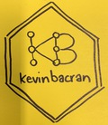

This package comes with no guarantees whatsoever.
What?
How separated (in a graph-theory sense) are authors on the Comprehensive R Archive Network (CRAN), the home of R packages?
The aim is to provide some functions to approximate an implementation of The Six Degrees of Kevin Bacon, or Erdos Numbers and variants.
Read more
- {kevinbacran} demo: what’s your Hadley Number? by Matt Dray: a shiny app to get and visualise the separation between CRAN authors and Hadley Wickham.
- ‘What’s your Hadley Number?’ by Matt Dray: a blogpost introducing the package and the Shiny app
- ‘With added bacran’ by Duncan Garmonsway: a blogpost using the package to find out more about author separation on CRAN:
How do?
# Install this development version with
remotes::install_github("matt-dray/kevinbacran")
# Load the package
library(kevinbacran)
# Get a tidygraph of authors from CRAN data
# (nodes) and packages (edges)
combo_graph <- kb_combos()
# Get subset of CRAN tidygraph composed of named authors
# plus the packages and authors that connect them
pair_graph <- kb_pair(
tidy_graph = combo_graph,
name_a = "Aaron Christ",
name_b = "Hadley Wickham"
)
# Print distance value between named authors
kb_distance(pair_graph = pair_graph)
# Plot network graph of authors and packages
# Named authors are terminals
kb_plot(pair_graph = pair_graph)Note that the functions of {kevinbacran} are prefixed with kb_*.
A snapshot of the CRAN graph from late Feb 2019 is available from the package by calling cran_graph. This may be useful for testing purposes.
References
This package makes use of several other excellent packages.
{cranly}
Ioannis Kosmidis (2019). cranly: Package Directives and Collaboration Networks in CRAN. R package version 0.3. https://CRAN.R-project.org/package=cranly
{dplyr}
Hadley Wickham, Romain François, Lionel Henry and Kirill Müller (2019). dplyr: A Grammar of Data Manipulation. R package version 0.8.0.1. https://CRAN.R-project.org/package=dplyr
{ggraph}
Thomas Lin Pedersen (2018). ggraph: An Implementation of Grammar of Graphics for Graphs and Networks. R package version 1.0.2. https://CRAN.R-project.org/package=ggraph
{purrr}
Lionel Henry and Hadley Wickham (2019). purrr: Functional Programming Tools. R package version 0.3.0. https://CRAN.R-project.org/package=purrr
{tidygraph}
Thomas Lin Pedersen (2019). tidygraph: A Tidy API for Graph Manipulation. R package version 1.1.2. https://CRAN.R-project.org/package=tidygraph
{tidyr}
Hadley Wickham and Lionel Henry (2018). tidyr: Easily Tidy Data with ‘spread()’ and ‘gather()’ Functions. R package version 0.8.2. https://CRAN.R-project.org/package=tidyr